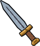

Silver Bar
Obtaining
- Bought from Merchant Wilhelm for 60 gold
- Dropped by Wild Huntsman (80% a kill)
- Made with Blacksmithing level 15 at a Furnace
- Reward from the quest Silver for the Countess
Used to make
| Item | Skill | Needs | Where |
|---|---|---|---|
| Mage's Ring ×1 | Blacksmithing 30 | 1 × | Anvil |
| Bowmaster's Ring ×1 | Blacksmithing 50 | 2 × | Anvil |
| Fletching 65 | 2 × | Fletching Bench | |
 Jarl's Sword ×1 | Blacksmithing 60 | 4 × | Anvil |
| Blacksmithing 35 | 1 × | Anvil |
Creation
| Skill | Makes | Needs | Where | Tool |
|---|---|---|---|---|
| Blacksmithing 15 | 1 | 2 × | Furnace |